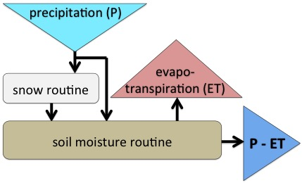
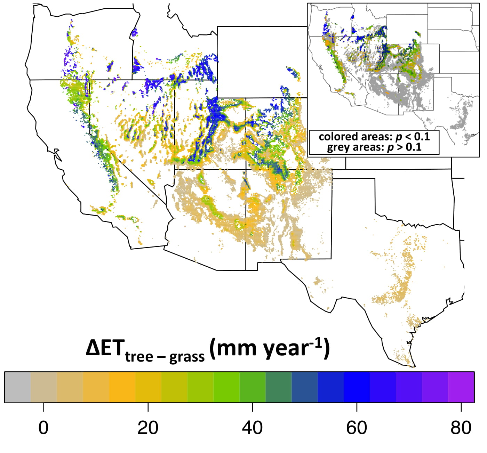
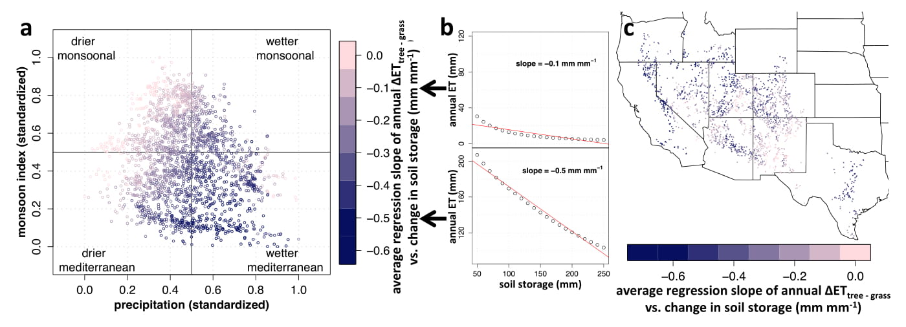

Climate Moderates Potential Streamflow Shifts with Pinyon-Juniper Cover Change
This project was developed in response to the conflict described in the previous page - is there potential for PJ cover change to result in meaningful shifts in streamflow? To answer this question we utilized a well established process-based hydrologic model to simulate evapotranspiration. Evapotransipration is central to understanding how streamflow will potentially shift, since the amount of precipitation, minus ET, results in the water "left over" that either recharges groundwater or becomes streamflow. So shifts in ET result in shifts in streamflow. Below is a conceptual model of the hydrologic model we used to simulate ET.

Figure caption: Conceptual hydrologicall model based on Hydrologiska Byråns Vattenbalansavdelning (HBV) model (Niemeyer et al. 2017, Hydrological Processes).
Precipitation - Evapotranspiration
We simulated the water budget of all pinyon and juniper cover (based on USDA Forest Service (USFS) and US Geological Survey (USGS) 1 km map). Daily temperature and precipitation from 1981 to 2010 was based from PRISM (Daly et al., 1994). We simulated ET in grass and PJ (tree) cover. The central results we are interested in is the difference in ET between tree and grass cover (ΔETtree‐grass). Differences in cover was based on differences in soil accessable to roots in the model. For grass, roots could access 100 mm of moisture in the soil (i.e. plant available water). For tree cover, roots could access 200 mm of moisture in the soil. We used the HBV model to simulate shifts in ET (see above figure).
We first evaluated our model by comparing changes in streamflow or groundwater recharge in field studies with our simulations. The Beaver Creek study in Arizona saw a 9-year average increase of 9.7 mm (Clary et al. 1974). In the same grid cell, HBV simulated a 7.6 mm increase in ΔETtree‐grass. In Texas, two studies revealed a 2.4 mm and 3.8 mm increase in streamflow after PJ cover removal (Richardson et al. 1979; Wright 1996). In our study the average increase in ΔETtree‐grass was 6.9 mm and 3.1 mm in the two corresponding cells, respectively. Finally, at Reynolds Creek Experimental Watershed, a study where dense sagebrush was removed saw an increase in groundwater recharge of 60 mm (Seyfried and Wilcox 2006). Our model simulated a 64.6 mm increase in ΔETtree‐grass in the same grid cell. Taking the comparison of these four field studies and our simulations, we see our study simulated changes in streamflow or groundwater recharge via the ET reasonably well.
We simulated ΔETtree‐grass across PJ cover in the western US. Again, ΔETtree‐grass is essentially how much streamflow could potentially increase with removal pinyon and juniper trees. The annual average ΔETtree‐grass is mapped in the figure below. Gray and yellow areas have little or no difference in ET between grass and PJ cover. Areas in green, blue, and purple have greater increases in ET between tree and grass cover. In the inset figure, areas where ET between grass and PJ cover were statistically different are colored. Converseley, areas in the subset figure in grey are statistically not different.

Figure caption: Map of average annual ΔETtree‐grass. The inset map is the same map, but with the color areas were the tree cover ET and grass cover ET are statistically different with a t-test, based on a p < 0.1 cutoff (Niemeyer et al. 2017, Hydrological Processes).
Below is a link (click on the picture) to an interactive map of these same values plotted in a Google Map environment. Zoom in to specific locations and click on the blue dots for the ΔETtree‐grass value, as we as average annual precipitation, and the % change in ΔETtree‐grass (ΔETtree‐grass/annual precipitation).
We see how simulated increases in ΔETtree‐grass vary based on the region. In the the southwestern U.S. - Arizona, New Mexico, and Texas - most areas have little or no increase in ΔETtree‐grass with changes in cover. Conversely, most areas in the norther distribution - California, Oregon, Idaho, Utah, Nevada, and Colorado - showed an increase in ΔETtree‐grass with changes in land cover.
Even though the timing of precipitaiton is important, we wanted to compare if precipitation or monsoon index influenced changes in ΔETtree‐grass. To do this we simulated differences in plant available water in 10 mm across all 30 years. We then graphed how sensitive these areas were across the varios total precipitation and monsoon index. In the figure below, the areas in purple are more sensitive to change in plant availabe water, and are therefore areas where changes in PJ cover is more likely to produce changes in streamflow. We see that areas with climates that are both wetter and more mediterranean (i.e. areas where precipitation occurs in the winter) are more sensitive to changes in plant available water.

Figure caption: A) Plot of precipitation (standardized) vs. monsoon index (standardized), with the color denoting the slope of the ΔETtree‐grass vs. change in soil storage regression line, B) two examples of different plotted ΔETtree‐grass vs. change in soil storage with the regression line, C) map of the slope of ΔETtree‐grass vs. change in soil storage regression line (Niemeyer et al. 2017, Hydrological Processes).
Information on this page is based on this publication, where you can find more detailed information about this study.